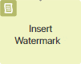
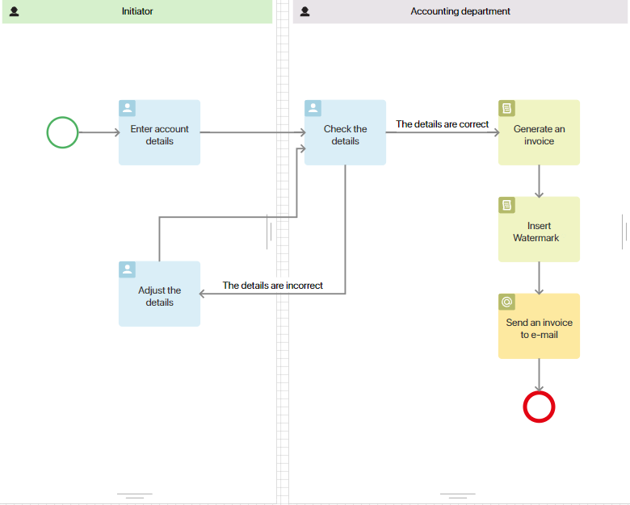
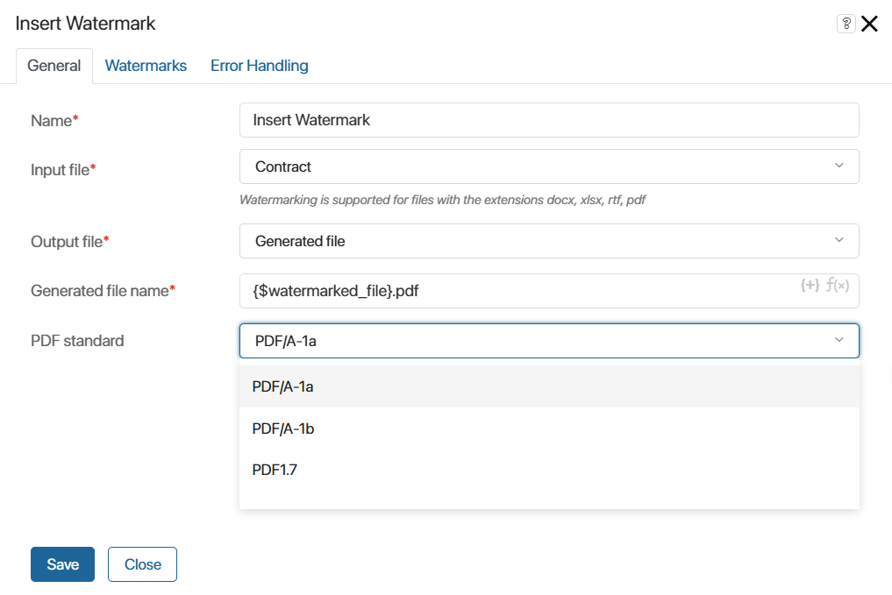
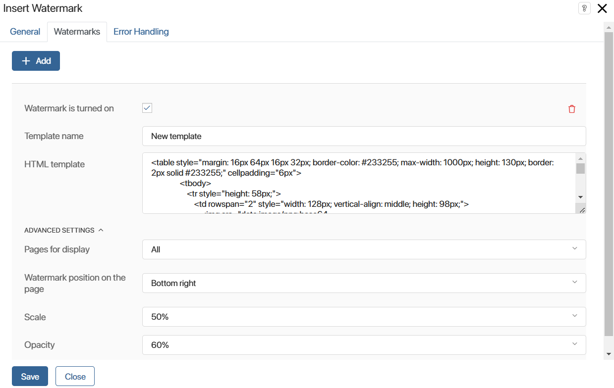
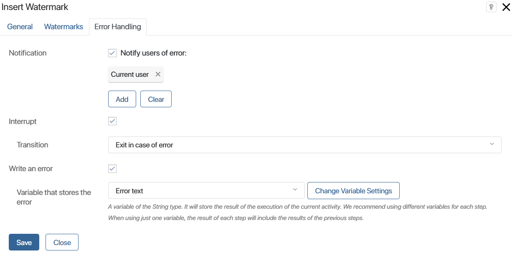

Insert Watermark activity allows you to insert watermarks into .docx, .xlsx, .rtf, and .pdf files during a business process. In the item settings, you can control watermark templates: their appearance, number, location on the page, etc. As a result, .pdf files are generated.
Unlike a watermarked file, which can be obtained when using the printed form of documents, the file obtained from this activity is automatically saved to a separate variable. It can be used in the course of the business process, for example, to send it for approval, save it in the database, or send it to the contractor by mail.
Let’s consider using the element in the process of preparing an invoice and sending it to the email of a contractor. In the course of the business process, an employee enters data that are sent to the accounting department for checking. Based on the verified data, an invoice is generated, which is then watermarked. The ready document is sent to the contractor’s email using the Email Notification activity.
The diagram of the process may look as follows:

Activity settings
On the process page, in the toolbar to the right of the modeling canvas, open the System Elements tab.
Drag the Insert Watermark activity onto the diagram and place it wherever you want to watermark the file during the process.
Double-click the added activity to open the settings window.
General tab

- Name*. Specify the name of the activity to be displayed on the process diagram.
- Input file*. Select from the process context a variable of the File type containing the document to be watermarked.
- Output file*. Select from the process context a variable of the Files type to which the watermarked document will be written.
- Generated file name*. Specify the name to be assigned to the new file after watermarking and the .pdf. document format For example, Invoice: final.pdf. To add a variable from the process context to the name, click the {+} icon on the right side of the field. Click the f(x) icon to use DateTime() function, click the f(x) icon. To form a more complex name, you can use other functions by manually typing them into the field. For more information about using functions, see the Template syntax article.
- Convert to PDF. Enable this option if you want the document to be created as PDF.
- PDF standard. This field appears when the Convert to PDF option is enabled. Select the desired .pdf format. The default option is PDF/A-1a. Other available formats are PDF/A-1b and PDF1.7.
Watermarks tab
To create and customize a watermark template, click +Add.

- Watermark is turned on. Check the option to have the customized template applied to the document.
- Template name. Enter a new template name for the watermark.
- HTML template. Specify the HTML code of the template. Formation in the template is performed using tags as in a regular HTML document.
You can use context variables in the template, which should look like this: {$variable_name}. The variable name is unique, for example, {$contractor}.
HTML watermark template example
<table style="margin: 16px 64px 16px 32px; border-color: #233255; max-width: 1000px; height: 130px; border: 2px solid #233255;" cellpadding="6px"> |
Please note that not all tags, attributes, and CSS properties available for the HTML markup language can be used in the watermark template. For a complete list of allowed components, see Print form.
- Pages for display. Select on which pages of the document to display the watermark: All, First, and Last.
- Watermark position on the page. Define the position of the watermark in the document: Center, Top left, Top right, Bottom left, and Bottom right.
- Scale. Specify the percentage of watermark scaling.
- Opacity. Specify the percentage of opacity of the watermark.
You can create an unlimited number of templates. You can display several watermarks on one document. To do this, enable the Watermark is turned on option in the settings of the desired templates.
To delete a watermark template, click the recycle bin icon.
Error Handling tab
You can insert watermarks into .docx, .xlsx, .rtf, and .pdf files. If a user attaches a file of a different format, an error occurs during the process execution when inserting watermarks. In the Error Handling tab, define further actions in such a case.

- Notification. Enable the option so that the users specified in this field receive a notification about the error. You can select the current user, a context variable, a group, or an org chart item.
- Interrupt. Enable the option and select the connector that the process will follow in case of an error.
- Write an error. Enable the option and specify the variable to which the error text will be written.
After filling in the fields, click Save.
When the process reaches the configured activity, the file will be watermarked according to the set parameters. The new .pdf document will be saved to the variable that was specified as the output file. You can use this variable during the process, for example, add it to a task form or use it in a script.
Found a typo? Select it and press Ctrl+Enter to send us feedback